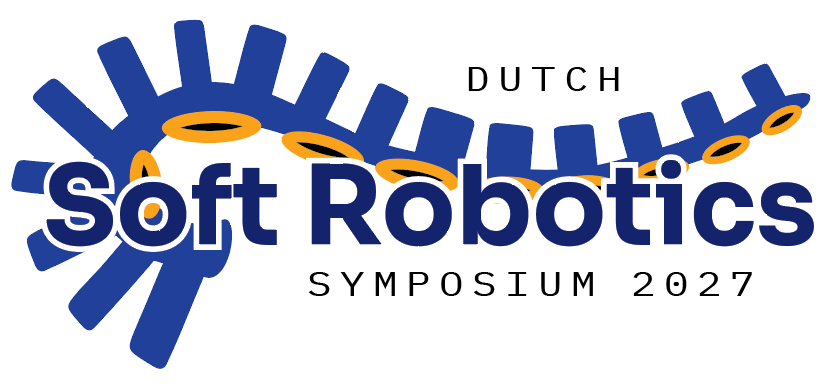

22–23 Feb 2027 · TU/e Eindhoven
A national meeting for everyone building robots that bend, stretch, squeeze and adapt, from materials to machines.
01 / About
The Netherlands has one of the most active soft robotics communities in the world. DSRS 2027 brings it together in one room.
Expect keynote talks, contributed presentations, posters and live demos from universities, research institutes and industry. It's an informal setting for sharing ideas, meeting peers and starting new collaborations. Researchers, students and anyone curious about soft robots are welcome.
Check back here for more information in the days ahead!
02 / Potential Topics
- Soft actuators & artificial muscles
- Smart & responsive materials
- Bio-inspired design
- Embodied & physical intelligence
- Fabrication & 3D printing
- Modelling, simulation & control
- Soft sensing & e-skins
- Medical, wearable & assistive robotics
03 / Key info
- Date
- 22–23 February 2027
- Location
- Auditorium, Eindhoven University of Technology (TU/e) · Eindhoven, The Netherlands
- Format
- Keynotes, talks, posters & demos
- Registration
- Opens soon